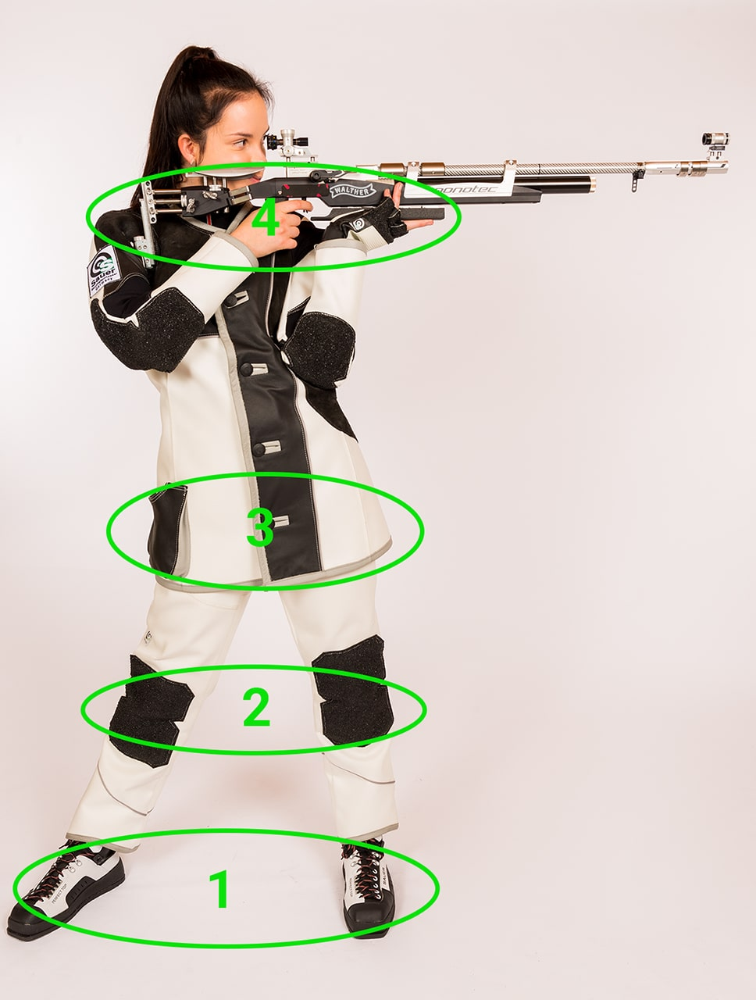
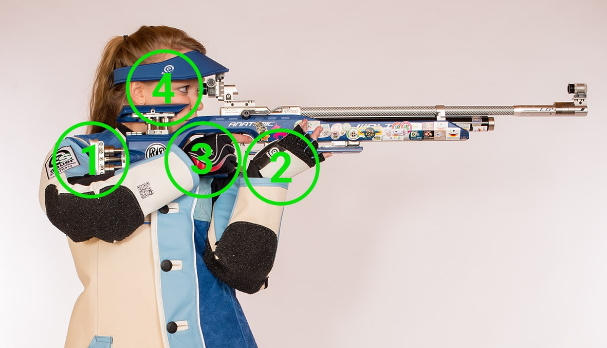

Gewehr
(more ...)
Set-Up of the Positioning (Four Control Layers):
In the standing position, always build up your positioning from the bottom to the top via the four control layers (foot position, leg position, hip position and upper body/shoulder position). Your foot position forms the static foundation for your whole positioning. The foot pointing towards the target is therefore also called the "essential pillar".

1 Foot Position:
- Your foot position should be at least one shoulder width apart, with an angle of about 90 degrees to the target. Depending on your height and the orientation of the target, the distance can be increased.
- Standing smaller than shoulder-width apart tends to have a negative effect on your stability. To support the positioning, your back leg is placed slightly back.
- To minimise lateral sway, you should load the entire soles of your feet evenly.
- To add stability to your positioning, you can turn the tips of your feet in slightly. This creates a slight muscle tension and stretching of the cruciate ligaments in the knee. This method can help you with variations in your positioning.
- You can adjust the height of your zero point in the positioning by changing the distance in the back foot. However, the "essential pillar", i.e. your foot pointing towards the target, remains in the same position. Decreasing the distance causes your zero point to shift downwards, increasing the distance causes your zero point to shift upwards.
2 Leg Position:
- Your entire leg musculature should be relaxed, the basic body tension without consciously tensing the muscles is optimal. Your knees are fully extended, but without tensing.
- If you look at your front view, the "essential pillar", i.e. the leg that is closer to the target, should be aligned very steeply. While the back leg is off the centre of gravity. It is best to ask someone to take a photo of your front view, then you can see your leg position best.
3 Hip Position:
- Parallel to the line of fire, move your hips towards the target. Depending on your height and the weight distribution on your feet, your hips will find their optimal position. However, the final position should not be shifted beyond your front foot (essential pillar), otherwise strong body swaying can occur.
- Your hips carry the stability through your spine to your upper body, so you should make sure that they are not twisted. A slight twist can still be compensated for with the upper body. When looking at your positioning from behind in the direction of the shot, only one leg should be visible. It is best to ask someone to take a photo of your side view, then you can see your hip position best.
4 Upper Arm/Shoulder Position:
- With your upper body leaning back slightly and your shoulder girdle turned in towards the target, you offer enough space to hold your rifle. A relaxed posture, without pulling up your shoulder, creates a perfect basic position that does not strain your back muscles. Your upper body slumps into a comfortable position and is relaxed by your abdominal breathing.
- Both of your shoulders are completely relaxed during the stroke. The shoulder facing the target is slightly tilted towards the target, while the back shoulder is only slightly lowered. If you look more closely, both shoulders are at the same height. This results in a horizontal line between your right and left shoulder. With tall shooters it is difficult to establish the horizontal line. It is best to ask someone to take a photo of your back view, then you can see your shoulder position best.
Position of the Rifle (Four Control Points):
The insertion of your rifle is optimally positioned via the four control points, shoulder/upper arm, support arm/support hand, trigger hand and head rest.

1 Shoulder/Upper Arm:
- The butt plate is used to create the connection between your shoulder/upper arm and your rifle. To do this, you should use your butt plate over its entire length and adjust it to the insertion position. Also to create a firm connection and the most important frictional connection between the rifle and you as the shooter. Your rifle is pulled by a passive pull from your trigger hand on the grip into your shoulder and thus forms the frictional connection.
- You have two options when inserting your butt plate.
1. you place it in the bend between the upper arm and the torso, which allows a very firm connection and a good head position.
2. you place it in the hollow between the shoulder joint and the biceps, which leads to a more comfortable feel and more fine control.
2 Supporting Arm/Supporting Hand:
- The "upper part of the essential pillar" is your supporting arm. Your forward hip is chosen as the point of contact for the elbow of the support arm. You can position your elbow optimally above your hip bone. The rifle should be supported without muscle power in the upper arm. Therefore, when viewed from the front, your support arm sits vertically under the muzzle of the barrel to support the weight as a "essential pillar".
- When positioning your support hand, make sure it is not too close to the trigger and not too far from the front-stock. Too close to the trigger can cause tension in your muscles. In addition, a top-heavy rifle tends to become unstable and slip out of your shoulder. Too far on the front-stock results in a wide angle between your upper and lower arm, which can overload your muscles and lead to muscle tremors.
- The choice of your optimal hand position depends on several factors. Your height and the length of your neck, as well as the use of a height-adjustable hand rest and a sighting line elevation play a major role. Basically, if your head is in an optimal position and you can see through the sights without any problems, the hand rest should be chosen. You should not feel any pain in the supporting hand even over a whole shooting series.
- In practice, smaller shooters tend to rest the rifle on their fist and stand in the lower position, while taller shooters shoot the rifle in the flat of their hand in the upright position. You can find out which hand position is optimal for your support hand and your stop over the course of several training sessions.
3 Trigger Arm/Trigger Hand:
- The grip of your rifle should be well enclosed in the palm of your hand. A grip that is too small or too large can lead to trigger malfunctions. You should grasp the grip with an even, medium to high firmness. This grip strength creates a passive tension on your naturally applied arm. Pulling the grip closer also happens passively rather than actively.
- The wrist of your trigger hand should always be extended. Your bent wrist can be positioned straight by adjusting the grip or the trigger blade. Make sure that your trigger finger is always guided freely and that you position the trigger blade centrally on the first phalanx.

4 Head Rest:
- The placement of the head on the cheek piece is very important for your stability as well as for your aiming process and must therefore always be positioned exactly. Under its own weight, your head is slowly positioned on the cheek piece; you should feel the cheek piece over your cheekbones.
- In order to look centrically through the sights without any problems, you have the option, in addition to using a sight raiser block, of tilting the rifle slightly towards your head and tilting your head slightly towards the sights without straining your neck and throat muscles.
- When viewed from the outside, the cheek piece must be adjusted so that your ear, eye and sight, when aiming, are in an imaginary line.
Alignment with the Target (Zero Point):
Aligning your positioning with the target, taking into account all control planes and points, is the crucial bridge to delivering the perfect shot via your sequence and sighting.
TIP:
- Find the centre of the target at the shooting range. In the case of straight cable systems, you can orientate yourself by the centre cables. With electronic systems you should look at the centre of the target at some distance from the shooting range and find the centre. It is always helpful to have a small marker on the shooting stand. If this is not available, you can make your own mark to find the centre when you leave the shooting range.
- Align yourself with your hip axis parallel to the shooting axis perpendicular to the centre of the target, which you have found out beforehand. This is called a "rough lateral alignment".
- Now take the recommended foot position and insert the rifle. In this situation, you must adjust your position slightly to align the entire system with the centre of the target. As on a turntable, you should make minimal rotational movements of the entire system.
- When setting up, always consider the entire system: because foot and hip position as well as the posture of the head always influence each other.
Inner Positioning:
The inner positioning is characterised by the fact that only you can evaluate whether everything fits perfectly. The invisible inner positioning refers to your body feeling, the tension of your muscles. Together with the state of stretch of your ligaments and the position of your body parts in relation to each other, you have to find your optimal comfortable position in the positioning.
Zero Point Check:
With the so-called zero point check you can check whether your inner and outer positioning are optimally aligned in relation to the target. To check this, you can repeat the following sequence several times and reposition yourself if necessary. You should carry out the zero check several times during each set-up phase and also during each firing sequence in order to be able to react to slight changes.
TIP:
- Slowly guide the rifle over the fence assembly into the holding space, the centre of the mirror, and stand there calmly.
- Slowly lower your gaze, making sure that your head remains in the target position. Breathe in and out slowly and continuously.
- Turn your gaze back towards the sights and check if the position of the rifle in the holding area has changed.
- You can make deviations via the positioning correction.
- Repeat the process several times until the front ring sight and the target are almost congruent.
In any case, carry out the zero point check several times in succession during set-up in order to carry out the correct positioning correction.
Positioning Correction:
You can change and correct your zero point via several factors. Note that only fine corrections are meant here. Coarse changes of the fence to the firing axis can be made by adjusting the whole fence backwards or forwards.
Changing the foot position
bwider foot position = higher zero point (rear foot is changed)
narrower foot position = lower zero point (rear foot is changed)
Turning the toes of the foot to the left or right = zero position to the left or right
Move rear foot forward or back = zero position to the left or right
Change of supporting hand/arm:
Move the support hand forward on the front-stock = zero position lower
Putting the supporting hand back on the front-stock = zero position higher
Position of the support arm on the hip to the left = zero position to the left
Position of the support arm on the hip to the right = zero position to the right
Position of the support arm on the hip downwards = zero position lower